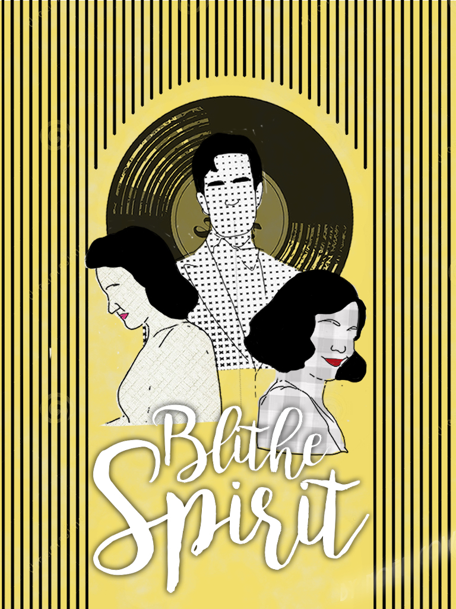
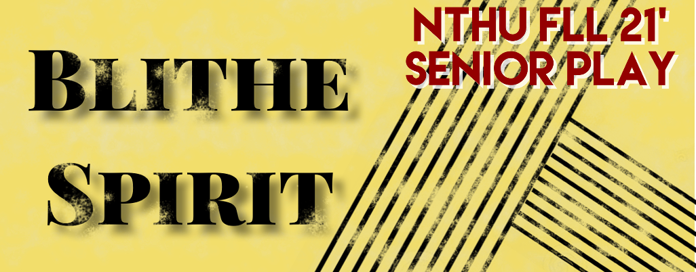
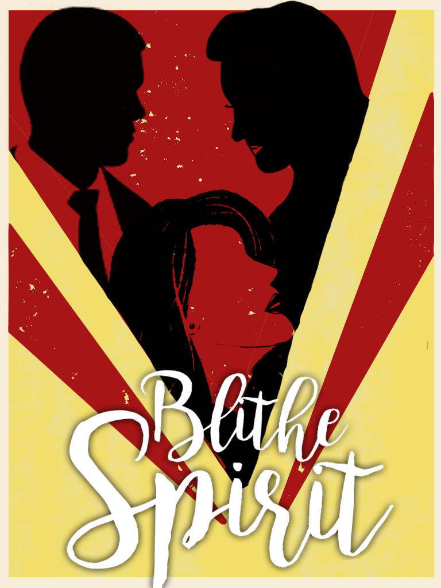
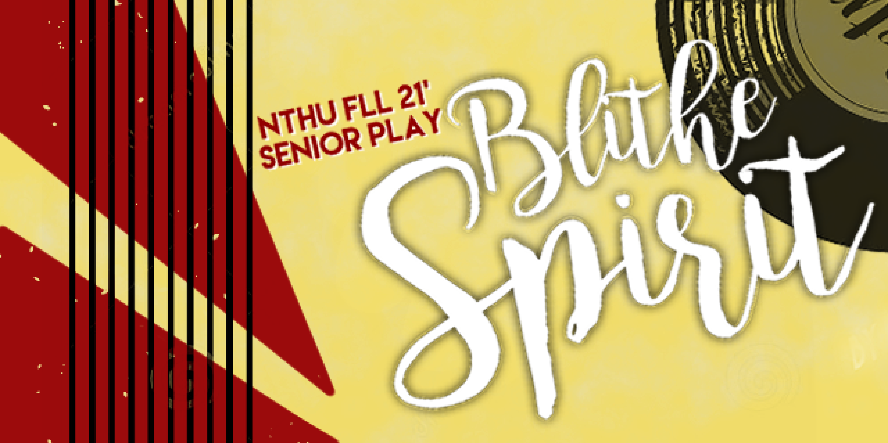
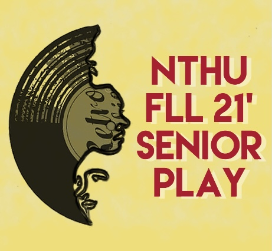
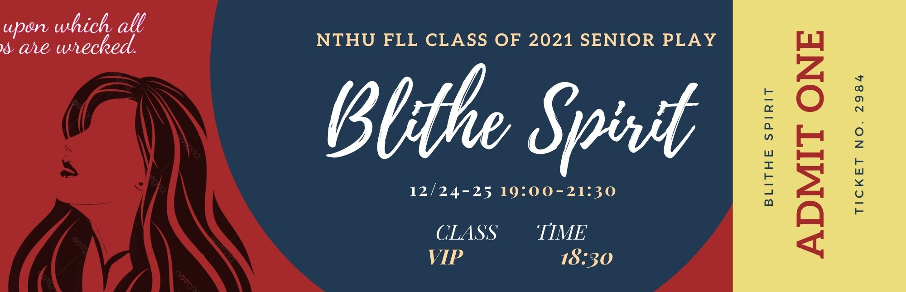
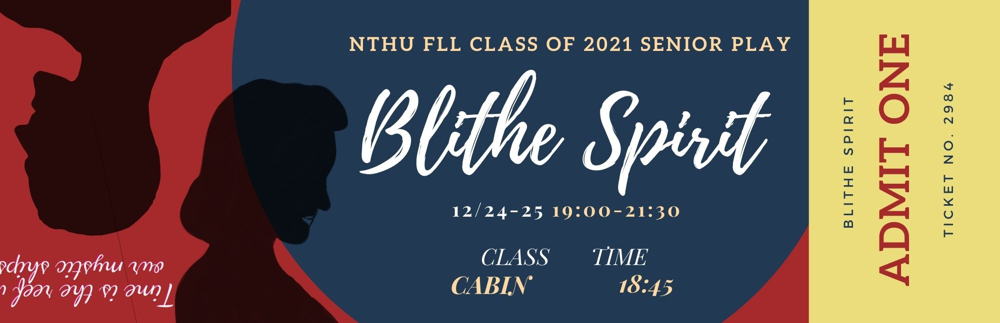

Graphic Design
NTHU FLL CLASS OF 2021 SENIOR PLAY
清大外語21級畢業公演
The theme of senior play in 2021 is "Blithe Spirit", a comic play by Noël Coward.
It centers around novelist Charles Condomine, who invites clairvoyant Madame Arcati to his house to conduct a seance. He hopes to use the experience to write his next book, but the plan backfires when Arcati manages to summon his late first wife Elvira. Elvira attempts to disrupt his marriage to his second wife, Ruth, who cannot see and hear the ghost.
While the play may come off as something funny and irony, it actually has an underlining theme, realism. The play gives us a lot to think about. It makes us think about how people treat each other and the legacy we’re going to leave. The audience will be able to see that in how Charles treats Elvira differently than he treats Ruth, especially since both women’s personalities are very different.
21級畢業公演的主題是Blithe Spirit，是一部NoëlCoward創作的黑色喜劇。
故事主軸圍繞著小說家Charles Condomine，他邀請靈媒Arcati夫人到家中進行一次聚會，希望可以利用這段奇特經歷，為新書產生靈感，但是當Arcati設法召集已故的第一任妻子Elvira時，原本的計劃就已經注定走向無可控制的一團亂，Elvira試圖破壞他與第二個妻子露絲的婚姻。雖然這齣戲看起來充滿稽與諷刺，但實際上，作者創作時卻隱喻一個強調現實的主題，給了我們很多思考的空間，從觀察查爾斯對待兩個女人的方式，尤其兩位女主角的性格十分迥異，使我們省思人們之間的相處模式以及離別後留下的產物。
Poster and banner (Version1)
 Poster and banner (Version2)
Logo
Tickets

NTHU FLL Class of 2022 Uniform
清大外語22級系服
The logo that I made comes from a question I heard in a public speech. "Do you want to become the best version of you?" I hope you answered yes. In fact, if you didn’t answer with a resounding yes and a mental fist pump, then maybe you need more confidence which this logo can give you energy to trust yourself. We all have the opportunity to decide how we live everyday. We dare to do the impossible. We know how to be the best versions of ourselves. We dare to push ourselves to the extreme. We dare to be the BEST.
On the other hand, on the back, I like the schwa kind of meme very much, which I believe that this IPA sign can bring lots of FLL classmates memories back. In the phonetic class, we all feel struggleing to memorize all the IPA symbols which lots of them seem to be wierd creatures that don't really make sense in the world.
衣服正面的標誌，靈感來自於我在一場演講中聽到的問題，「你想要展現最好的自己嗎？」我希望您的答案是大大的要，如果您回答不出要，且感覺不到燃燒的靈魂，那麼您需要的是，這個標誌帶給你的滿滿自信，我們都由權利去決定自己要怎麼活每一天，大膽地完成不可能，我們都知道自己想成為的樣子，因此必須大膽地將自己推向極限，展現我們最好的一面。另外，衣服的後面，是我最喜歡的語音學迷因，相信這會引起學過語音學的同學們許多共鳴，因為被整個國際音標，是大家的惡夢，每個符號都好像這世上不合理的奇怪生物。